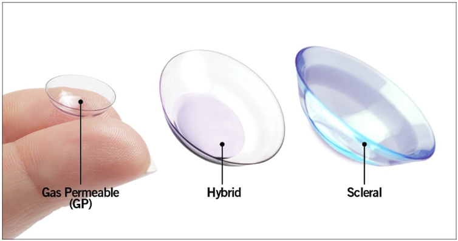

Rigid Contact Lenses
Reasons to use rigid contact lenses
Rigid contact lenses, also known as rigid gas permeable lenses, are customised lenses made of a stiff but highly breathable material that can provide excellent vision even in cases where glasses or soft contact lenses may fall short. Special types of these lenses include orthokeratology, hybrid (a mix of soft and rigid lenses), and scleral lenses.
- Here are some of the main reasons (beyond standard vision correction) why rigid contact lenses are used:
- High or complicated prescriptions: each lens is custom made so these are great for both lower prescriptions, as well as the higher, more complex ones.
- Keratoconus: this is a condition where the cornea thins, leading to an irregular "cone-like" shape. In more advanced stages, this generally means very high and irregular amounts of astigmatism which cannot be corrected by glasses or soft contact lenses.1
- Corneal grafts: similar to keratoconus, grafts result in a irregularly shaped cornea, so rigid contact lenses can once again provide vision correction that may not be possible with glasses or soft contact lenses.1
- Congenital cataract: this is a condition where the lens in the eye is not clear at birth, or becomes cloudy shortly after birth. Babies with more severe forms of this will need surgery to remove the lens. Whilst both rigid contact lenses and an implanted artificial intra-ocular lens (IOL) can provide effective vision correction after surgery, rigid contact lenses avoid the complications and follow up surgeries associated with IOLs2 so are often the first choice in these situations.
| Advantages | Disadvantages |
|---|---|
|
Can provide better vision than soft contact lenses by correcting irregular astigmatism Excellent comfort after adaptation Cost effective and durable Lower incidence of infection |
Can be uncomfortable and hard to get used to initially Lenses may move and slide more easily Higher initial cost Relatively less common and accessible Particles and dust can get stuck |
When rigid contact lenses may not be suitable
- These are some of the reasons why rigid contact lenses may not be for you:
- Living/working in dusty environments
- Ocular infection, allergies, and other inflammation
- Contact sports
- Poor motivation: the so called "barrier to entry" to rigid lenses is higher than soft lenses, given the greater initial cost and discomfort. Rigid lenses can also involve a more strict maintenance routine.
1. Lim, L., & Lim, E. W. L. (2020). Current perspectives in the management of keratoconus with contact lenses. Eye (London, England), 34(12), 2175–2196.
2. Infant Aphakia Treatment Study Group. (2010). A randomized clinical trial comparing contact lens with intraocular lens correction of monocular aphakia during infancy: grating acuity and adverse events at age 1 year. Archives of ophthalmology, 128(7), 810-818.